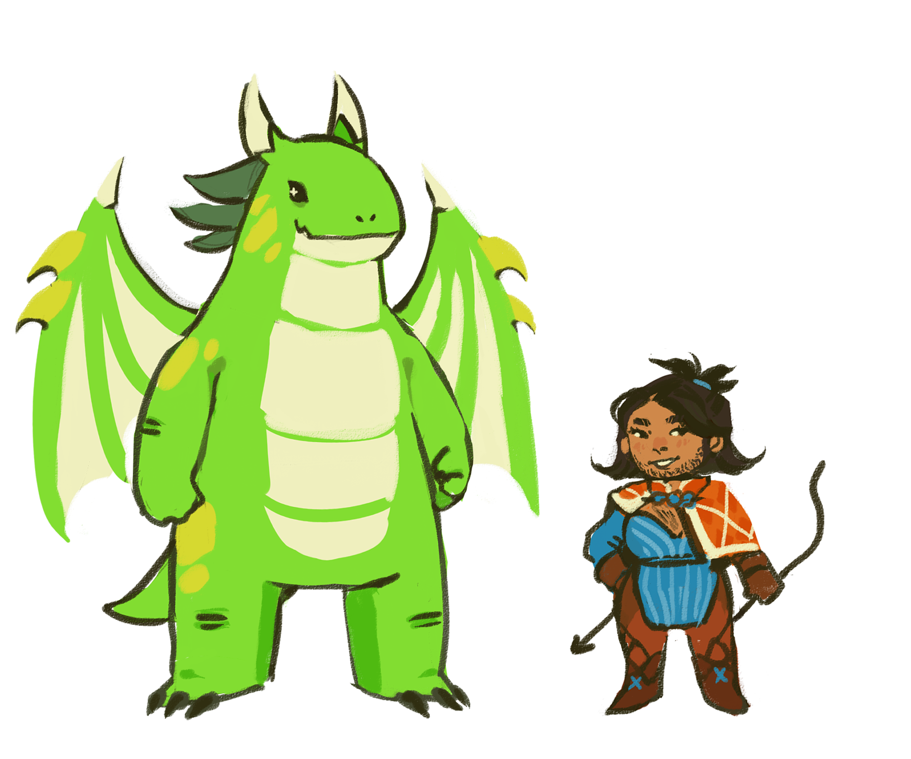
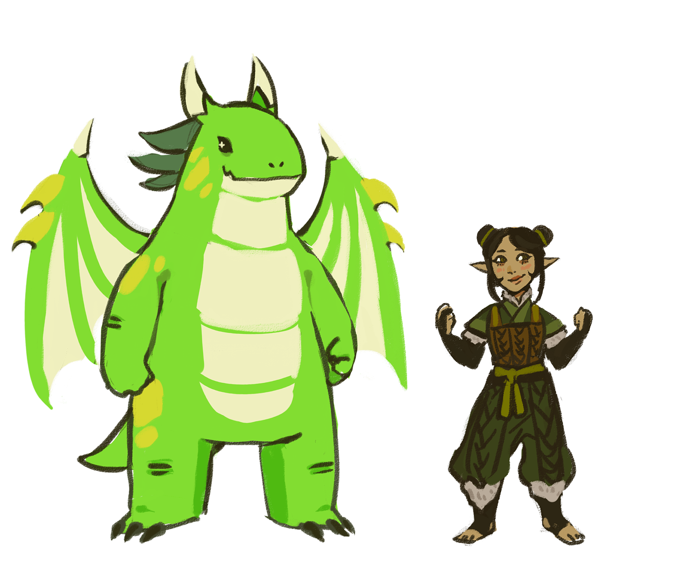
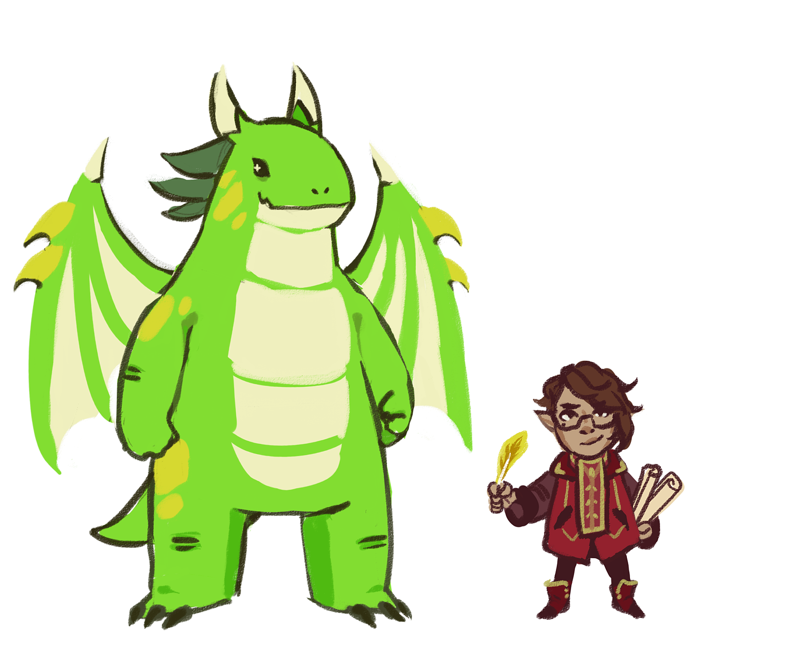
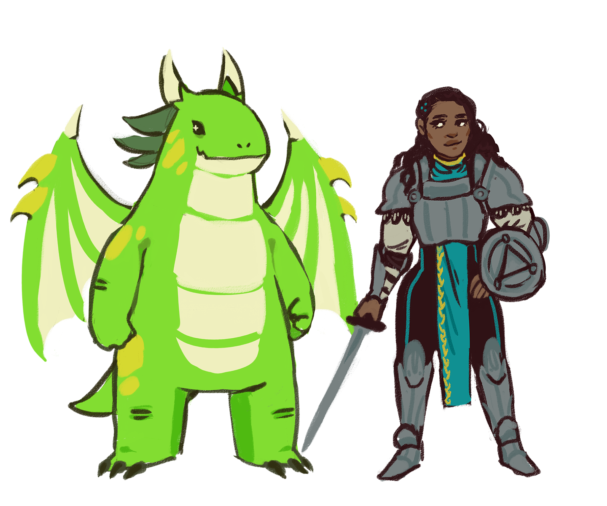
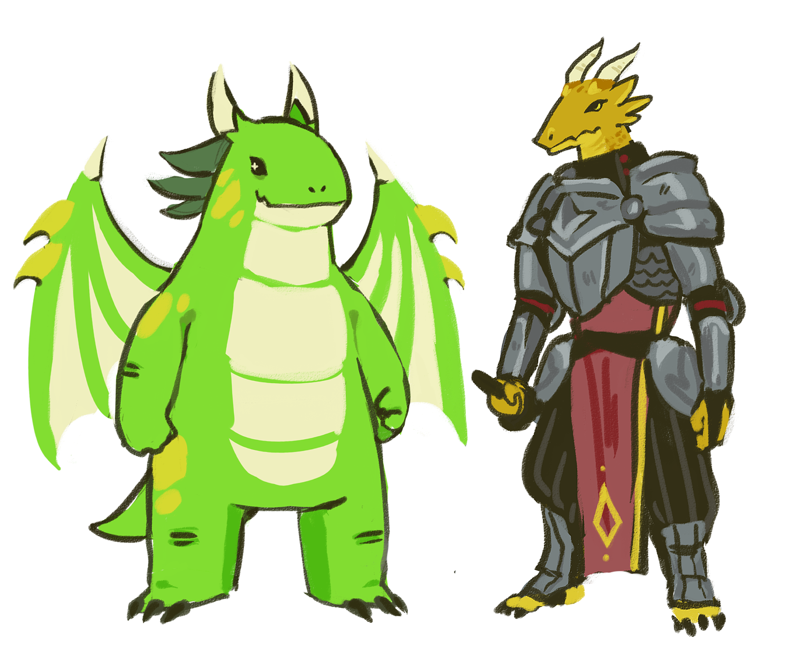
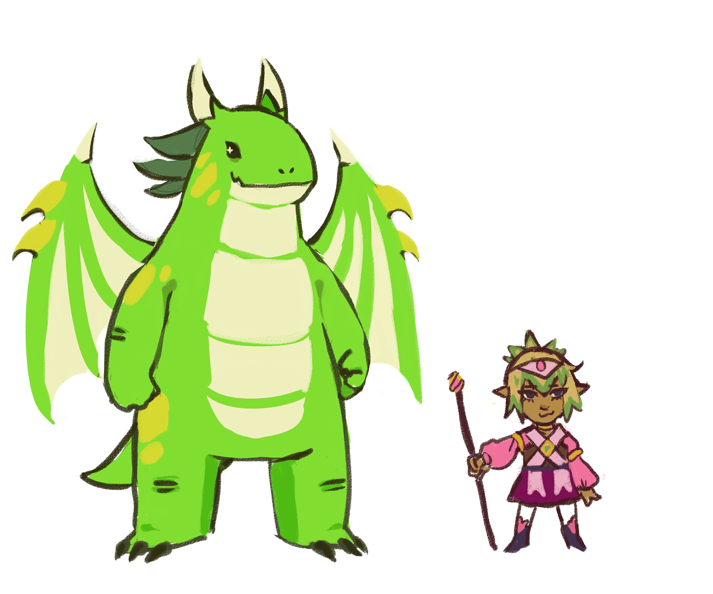
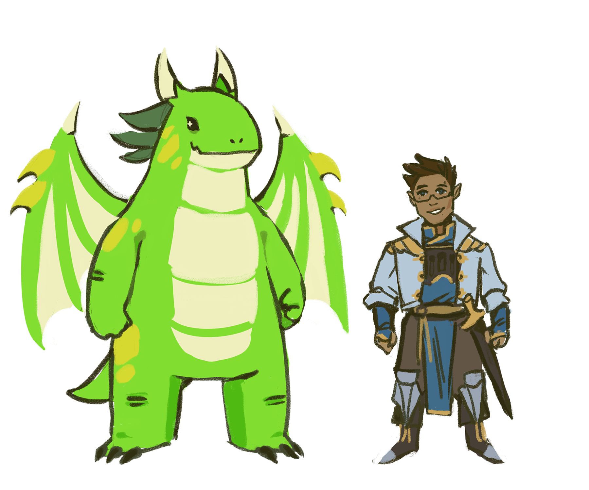
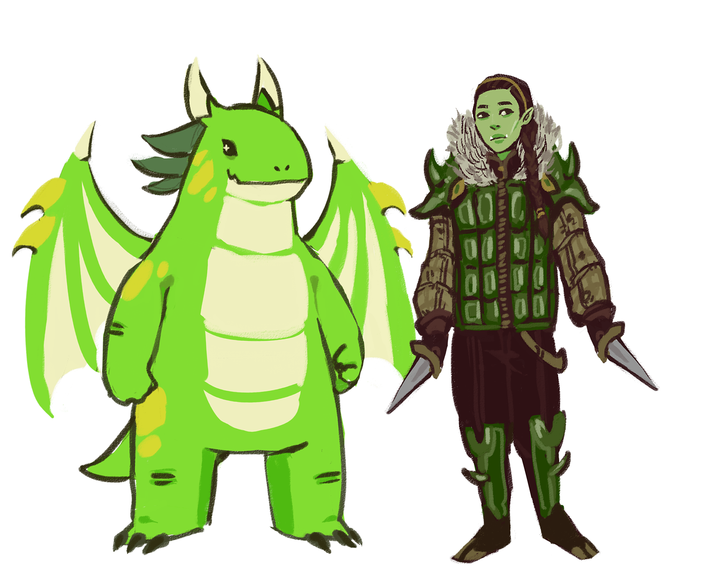
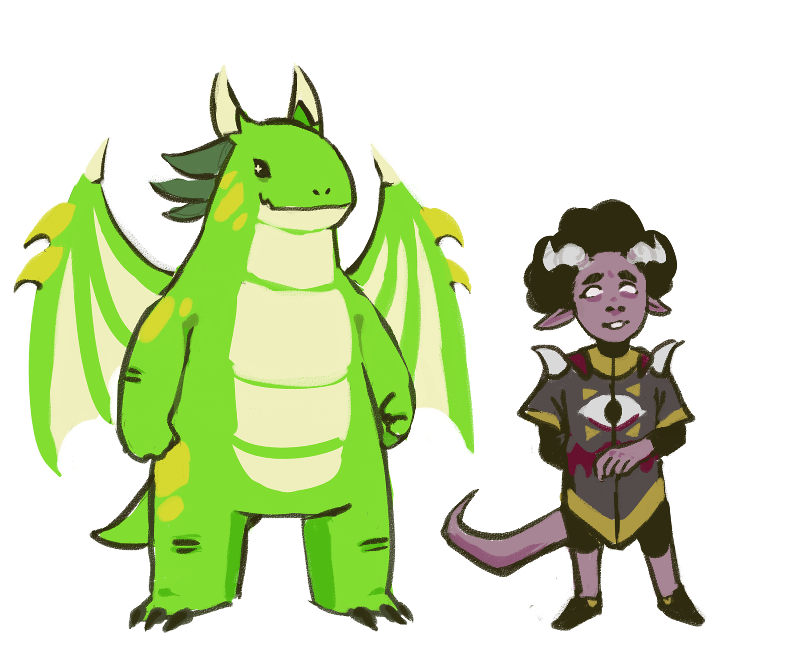

One of the most important parts of creating your character is choosing their race. Race determines a lot of things, from statistics to special traits. Choose a race and Margot will bring one of her friends over to explain it to you!
Be mindful that the history of these races may differ for some campaigns, so be sure to ask your DM what the culture of these races are in your campaign!
You might choose a race before or after you roll your dice to make a character. Choosing a race might be beneficial to maximizing some of your stats (i.e. you have a high roll and a bonus to dexterity, so you boost your rogue to 20 dexterity with a +5 modifier). You also might use it to mitigate some of your weaknesses. For example, you might decide intelligence is a “dump stat” for your character. You decide to use 9, your lowest number, which has a modifier of -1. However, you make your character a gnome, which means you add +2 to your Intelligence, giving your character 11 intelligence, which is actually a +0! This means you don’t have any negative modifiers.
Keep in mind that any race can be any class. There is a very feasible build with every combination! You don’t have to make something stereotypical like a dwarf barbarian, feel free to make a dwarf druid or a dwarf sorcerer! Choosing a nontraditional combination might make for fun roleplay, as it’s only important that your stats back up your class more than anything else.
See Margot's Friends!









Hill Dwarf
Xena and all other dwarves get:
+2 to their constitution score
25 base walking speed
Darkvision
Dwarven resilience
Dwarven combat training
Tool proficiency in Smith’s Tools, Brewer supplies, OR Mason’s tools
Stonecunning
Fluent in Common and Dwarvish
Hill dwarves also get:
+1 to their wisdom score
Dwarven Toughness
View more details below!
Mountain Dwarf
Xena and all other dwarves get:
+2 to their constitution score
25 base walking speed
Darkvision
Dwarven resilience
Dwarven combat training
Tool proficiency in Smith’s Tools, Brewer supplies, OR Mason’s tools
Stonecunning
Fluent in Common and Dwarvish
Mountain dwarves also get:
+1 to their strength score
Dwarven Armor Training
View more details below!
High Elf
Amy and all other elves get:
+2 to their dexterity score
30 base walking speed
Darkvision
Proficiency in perception
Fey Ancestry
Trance
Fluent in Common and Elvish
High elves also get:
+1 to their intelligence score
Elf Weapon Training
One Wizard cantrip
Fluency in one additional language
View more details below!
Wood Elf
Amy and all other elves get:
+2 to their dexterity score
30 base walking speed
Darkvision
Proficiency in perception
Fey Ancestry
Trance
Fluent in Common and Elvish
Wood elves also get:
+1 to their wisdom score
Elf Weapon Training
Fleet of Foot
Mask of the Wild
View more details below!
Lightfoot Halfling
Daniil and all other halflings get:
+2 to their dexterity score
25 base walking speed
Lucky
Brave
Halfling Nimbleness
Fluent in Common and the Halfling language
Lightfoot halflings also get:
+1 to their charisma score
Naturally Stealthy
View more details below!
Stout Halfling
Daniil and all other halflings get:
+2 to their dexterity score
25 base walking speed
Lucky
Brave
Halfling Nimbleness
Fluent in Common and the Halfling language
Stout halflings also get:
+1 to their constitution score
Stout Resilience
View more details below!
Human
Caley and all other humans get:
+1 to all attribute scores
30 base walking speed
Fluent in Common and one language of their choice
Option to choose Variant Human
View more details below!
Black Dragonborn
Balazar and all other dragonborn get:
+2 to their strength score
+1 to their charisma score
30 base walking speed
Draconic Ancestry
Breath Weapon
Damage Resistance
Fluent in Common and Draconic
Black dragonborn get:
Breath Weapon: Acid damage, 5 by 30 ft. line (Dex. save)
Damage Resistance: Acid
View more details below!
Blue Dragonborn
Balazar and all other dragonborn get:
+2 to their strength score
+1 to their charisma score
30 base walking speed
Draconic Ancestry
Breath Weapon
Damage Resistance
Fluent in Common and Draconic
Blue dragonborn get:
Breath Weapon: Lightning damage, 5 by 30 ft. line (Dex. save)
Damage Resistance: Lightning
View more details below!
Brass Dragonborn
Balazar and all other dragonborn get:
+2 to their strength score
+1 to their charisma score
30 base walking speed
Draconic Ancestry
Breath Weapon
Damage Resistance
Fluent in Common and Draconic
Brass dragonborn get:
Breath Weapon: Fire damage, 5 by 30 ft. line (Dex. save)
Damage Resistance: Fire
View more details below!
Bronze Dragonborn
Balazar and all other dragonborn get:
+2 to their strength score
+1 to their charisma score
30 base walking speed
Draconic Ancestry
Breath Weapon
Damage Resistance
Fluent in Common and Draconic
Bronze dragonborn get:
Breath Weapon: Lightning damage, 5 by 30 ft. line (Dex. save)
Damage Resistance: Lightning
View more details below!
Copper Dragonborn
Balazar and all other dragonborn get:
+2 to their strength score
+1 to their charisma score
30 base walking speed
Draconic Ancestry
Breath Weapon
Damage Resistance
Fluent in Common and Draconic
Copper dragonborn get:
Breath Weapon: Acid damage, 5 by 30 ft. line (Dex. save)
Damage Resistance: Acid
View more details below!
Gold Dragonborn
Balazar and all other dragonborn get:
+2 to their strength score
+1 to their charisma score
30 base walking speed
Draconic Ancestry
Breath Weapon
Damage Resistance
Fluent in Common and Draconic
Gold dragonborn get:
Breath Weapon: Fire damage, 15 ft. cone (Dex. save)
Damage Resistance: Fire
View more details below!
Green Dragonborn
Balazar and all other dragonborn get:
+2 to their strength score
+1 to their charisma score
30 base walking speed
Draconic Ancestry
Breath Weapon
Damage Resistance
Fluent in Common and Draconic
Green dragonborn get:
Breath Weapon: Poison damage, 15 ft. cone (Con. save)
Damage Resistance: Poison
View more details below!
Red Dragonborn
Balazar and all other dragonborn get:
+2 to their strength score
+1 to their charisma score
30 base walking speed
Draconic Ancestry
Breath Weapon
Damage Resistance
Fluent in Common and Draconic
Red dragonborn get:
Breath Weapon: Fire damage, 15 ft. cone (Dex. save)
Damage Resistance: Fire
View more details below!
Silver Dragonborn
Balazar and all other dragonborn get:
+2 to their strength score
+1 to their charisma score
30 base walking speed
Draconic Ancestry
Breath Weapon
Damage Resistance
Fluent in Common and Draconic
Silver dragonborn get:
Breath Weapon: Cold damage, 15 ft. cone (Con. save)
Damage Resistance: Cold
View more details below!
White Dragonborn
Balazar and all other dragonborn get:
+2 to their strength score
+1 to their charisma score
30 base walking speed
Draconic Ancestry
Breath Weapon
Damage Resistance
Fluent in Common and Draconic
White dragonborn get:
Breath Weapon: Cold damage, 15 ft. cone (Con. save)
Damage Resistance: Cold
View more details below!
Forest Gnome
Anona and all other gnomes get:
+2 to their intelligence score
25 base walking speed
Darkvision
Gnome Cunning
Fluent in Common and Gnomish
Forest gnomes also get:
+1 to their dexterity score
Natural Illusionist
Speak with Small Beasts
View more details below!
Rock Gnome
Anona and all other gnomes get:
+2 to their intelligence score
25 base walking speed
Darkvision
Gnome Cunning
Fluent in Common and Gnomish
Rock gnomes also get:
+1 to their constitution score
Artificer's Lore
Tinker
View more details below!
Half-Elf
Cameron and all other half-elves get:
+2 to their charisma score
+1 to two other attribute scores of their choice
30 base walking speed
Darkvision
Fey Ancestry
Skill Versatility
Fluent in Common, Elvish, and one other language of their choice
View more details below!
Half-Orc
Xiao Bao and all other half-orcs get:
+2 to their strength score
+1 to their constitution score
30 base walking speed
Darkvision
Menacing
Relentless Endurance
Savage Attacks
Fluent in Common and Orcish
View more details below!
Tiefling
Elliot and all other tieflings get:
+2 to their charisma score
+1 to their intelligence score
30 base walking speed
Darkvision
Menacing
Hellish Resistance
Infernal Legacy
Fluent in Common and Infernal
View more details below!
Save to Story Sheet
Saved!
Dwarf:
Meet Xena!
Dwarves mature at the same rate as human, but they’re considered young until they reach the age of 50. On average, they live about 350 years. Xena is age 30, and still considered pretty young!
They’re about 4 to 5 feet tall and are considered “Medium” size. Xena is 4’6”, which is an average height for dwarves!
Their walking speed is 25 feet, but their speed isn’t reduced by wearing Heavy Armor.
Darkvision: Xena has darkvision, which means she can see in the dark! She can’t make out color in the darkness, only shades of gray.
Dwarven Resilience: Xena has resilience to poison damage, which means that whatever damage she would take is halved. She also has advantage on saving throws against poison.
Dwarven Combat Training: Being a dwarf, Xena was raised surrounded by classic dwarven weapons. She has proficiency with battleaxes, handaxes, throwing hammers, and warhammers.
Tool Proficiency: Dwarves get to pick whether they are proficient in smith’s tools, brewer’s supplies, or mason’s tools. Xena is proficient with smith’s tools, and likes making jewelry for fun.
Stonecunning: Dwarves have a special eye for stonework. Xena is considered proficient for History checks for stonework. Her proficiency bonus will be doubled!
Being a dwarf, Xena can speak Common and Dwarvish.
There are two different subraces of dwarf:
Hill Dwarf:
Hill dwarves receive a +1 to wisdom
Dwarven Toughness: On first level, and every time you gain a level, add +1 to your hit point total. For example, Xena is a rogue. At level 1 her hit dice is 1d8 and her constitution is 16 (+3). Her hit points at level 1 is equal to 8 + 3 + 1, or 12. Next level she’ll add a 1d8 + 3 + 1 to her current total.
Mountain Dwarf:
Mountain dwarves receive a +1 to strength
Dwarven Armor Training: You have proficiency in light and medium armor.
Elf:
Meet Amy!
Elves live much longer than humans and typically reach adulthood at 100 years old. Amy is 30, which is very young for an elf!
They’re about 5 to 6 feet tall, are shorter than humans on average and are considered “Medium” size. Amy is 5’.
Their walking speed is 30 feet.
Darkvision: Amy has darkvision, which means she can see in the dark! She can’t make out color in the darkness, only shades of gray.
Keen Senses: Amy, like all elves, is proficient in perception.
Fey Ancestry: Amy has advantage on saving throws against being charmed, and magic can’t put her to sleep.
Trance: Instead of sleeping, Amy meditates deeply for 4 hours a day.
Being an elf, Amy can speak Common and Elvish.
There are two different subraces of elf:
High Elf:
High elves receive a +1 to intelligence.
Elf Weapon Training: High elves have proficiency with the longsword, shortsword, shortbow, and longbow.
High elves know one cantrip of their choice from the Wizard cantrip list.
High elves are fluent in one additional language of their choice.
Wood Elf:
Wood elves receive a +1 to wisdom.
Elf Weapon Training: High elves have proficiency with the longsword, shortsword, shortbow, and longbow.
Fleet of Foot: The base walking speed of wood elves increases to 35 feet.
Mask of the Wild: Wood elves can attempt to hide even when they are only lightly obscured by nature (such as foliage or mist).
Halfling:
Meet Daniil!
Halflings live about twice as long as humans and reach adulthood at age 20. Dani is 42, which makes him an adult!
They’re about 3 feet tall and are considered “Small” size. Daniil is 3’9”. He’s a bit on the taller side.
Their walking speed is 25 feet.
Lucky: When Daniil rolls a 1 on an attack roll, ability check, or saving throw, he can reroll the die and must use the new roll.
Brave: Daniil has advantage on saving throws against being frightened.
Halfling Nimbleness: Daniil can can move through the space of any creature that is of a size larger than him.
Being a halfling, Daniil can speak Common and the Halfling language.
There are two different subraces of halfling:
Lightfoot Halfling:
Lightfoot halflings receive a +1 to charisma.
Naturally Stealthy: Lightfoot halflings can attempt to hide even when they are obscured only by a creature that is at least one size larger than them.
Stout Halfling:
Stout halflings receive a +1 to constitution.
Stout Resilience: Stout halflings have advantage on saving throws against poison, and they have resistance against poison damage.
Human:
Meet Caley!
Humans live exactly as long as humans and reach adulthood in their late teens. Caley is 20, which is … as old as it feels to us!
They vary widely in height from under 5 to over 6 feet and are considered “Medium” size. Caley is 6’0”. She’s a pretty tall lady!
Their walking speed is 30 feet.
Ability Scores: Caley and all other humans get +1 to every attribute.
Being a human, Caley is fluent in Common and one other language of her choice.
There are 9 different ethnicities of humans in the D&D world, but none of them have any special features. See your handbook for specifics such as common names and physical appearance!
Note: There is a variant human that you can create. Here are the differences:
Variant Human:
Ability Scores: Caley would get +1 to two different stats of her choice. For example, she can get +1 to Intelligence and Charisma.
Skills: Caley would get proficiency in a skill of her choice. She’s a big nerd, so she’s proficient in History.
Feat: Caley gets one feat of her choice. You can see feats in the handbook on page 165. She chose Sentinel.
Dragonborn:
Meet Balazar!
Dragonborns age faster than humans and live to be about 80, but reach adulthood at age 15. Balazar is age 20, which means he’s no longer considered a young adult.
They are typically over 6 feet tall and are considered “Medium” size. Balazar is 6’3”. He’s a pretty average height for a dragonborn.
Their walking speed is 30 feet.
Ability Scores: Balazar, like all dragonborn, gets +2 to strength and +1 to charisma.
Draconic Ancestry: A dragonborn’s draconic ancestry determines their breath weapon and damage resistance. Balazar is a Gold dragonborn, which means that his damage type is Fire and his breath weapon is a 15 foot cone that requires a dexterity save. He is also resistant to Fire damage.
Black: Acid, 5 by 30 ft. line (Dex. save)
Blue: Lightning, 5 by 30 ft. line (Dex. save)
Brass: Fire, 5 by 30 ft. line (Dex. save)
Bronze: Lightning, 5 by 30 ft. line (Dex. save)
Copper: Acid, 5 by 30 ft. line (Dex. save)
Gold: Fire, 15 ft. cone (Dex. save)
Green: Poison, 15 ft. cone (Con. save)
Red: Fire, 15 ft. cone (Dex. save)
Silver: Cold, 15 ft. cone (Con. save)
White: Cold, 15 ft. cone (Con. save)
Breath Weapon: When a dragonborn uses their breath weapon, each creature in the area of the exhalation must make a saving throw, the type of which is determined by the dragonborn’s draconic ancestry. The DC for this saving throw equals 8 + the dragonborn’s Constitution modifier + their proficiency bonus. A creature takes 2d6 damage on a failed save, and half as much damage on a successful one. The damage increases to 3d6 at 6th level, 4d6 at 11th level, and 5d6 at 16th level. After the dragonborn uses their breath weapon, they can’t use it again until they complete a short or long rest.
As a dragonborn, Balazar is fluent in Common and Draconic.
Gnome:
Meet Anona!
Gnomes mature at the same rate as humans but live to be 350-500, so they reach adulthood at around 40. Anona is 50, which makes her a young adult!
They’re between 3 and 4 feet tall and are considered “Small” size. Anona is 3’6”, which means she’s average height for a gnome!
Their walking speed is 25 feet.
Darkvision: Anona has darkvision, which means she can see in the dark! She can’t make out color in the darkness, only shades of gray.
Gnome Cunning: Anona, like all gnomes, has advantage on all Intelligence, Wisdom, and Charisma saving throws against magic.
Being a gnome, Anona can speak Common and Gnomish.
There are two different subraces of gnome:
Forest Gnome:
Forest gnomes receive a +1 to dexterity.
Natural Illusionist: Forest gnomes know the minor illusion cantrip.
Speak with Small Beasts: Forest gnomes can communicate simple ideas with beasts classified as Small or smaller.
Rock Gnome:
Rock gnomes receive a +1 to constitution.
Artificer's Lore: Whenever rock gnomes make an Intelligence (History) check related to magic items, alchemical objects, or technological devices, they can add twice their proficiency bonus.
Tinker: Rock gnomes have proficiency with tinker’s tools. Using those tools, they can spend 1 hour and 10 gp worth of materials to construct a Tiny clockwork device (AC 5, 1 hp). The device ceases to function after 24 hours (unless they spend 1 hour repairing it to keep the device functioning), or when they use your action to dismantle it; at that time, they can reclaim the materials used to create it. They can have up to three such devices active at a time.
Clockwork Toy: This toy is a clockwork animal, monster, or person, such as a frog, mouse, bird, dragon, or soldier. When placed on the ground, the toy moves 5 feet across the ground on each of your turns in a random direction. It makes noises as appropriate to the creature it represents.
Fire Starter: The device produces a miniature flame, which you can use to light a candle, torch, or campfire. Using the device requires your action.
Music Box: When opened, this music box plays a single song at a moderate volume. The box stops playing when it reaches the song’s end or when it is closed.
Half-Elf:
Meet Cameron!
Half-elves mature at the same rate as humans but live to be around 180, so they reach adulthood at around 20.
They’re about the same size as humans at between 5 and 6 feet tall and are considered “Medium” size. Cameron is 5’4”. He’s a bit on the short side.
Their walking speed is 30 feet.
Darkvision: Cameron has darkvision, which means he can see in the dark! He can’t make out color in the darkness, only shades of gray.
Fey Ancestry: Cameron has advantage on saving throws against being charmed, and magic can’t put him to sleep.
Skill Versatility: Cameron and all other half-elves gain proficiency in two skills of their choice. Cam is training to become a doctor, so he’s proficient in Medicine. He’s also proficient in Perception, because it fits with his personality.
Being a half-elf, Cameron can speak Common, Elvish, and one other language of his choice.
Half-Orc:
Meet Xiao Bao!
Half-orcs age faster than humans and live to be around 75, so they reach adulthood at age 14. Xiao Bao is 34, which means they are a middle aged person.
Half orcs are taller and bulkier than humans, range from 5 to well over 6 feet tall, and are considered “Medium” size. Xiao Bao is 6’2”, which makes them an average height for a half-orc.
Their walking speed is 30 feet.
Darkvision: Xiao Bao has darkvision, which means they can see in the dark! They can’t make out color in the darkness, only shades of gray.
Menacing: Xiao Bao, like all half-orcs, is proficient in Intimidation. This is due to their big stature.
Relentless Endurance: Xiao Bao is made of some tough stuff. When they or any other half-orcs are reduced to 0 hit points but not killed outright, they can drop to 1 hit point instead. They can’t use this feature again until they finish a long rest.
Savage Attacks: When half-orcs score a critical hit with a melee weapon attack, they can roll one of the weapon’s damage dice one additional time and add it to the extra damage of the critical hit.
Being a half-orc, Xiao Bao is fluent in Common and Orcish.
Tiefling:
Meet Elliot!
Tieflings age at the same rate as humans but live a few years longer. Elliot is 21, which makes them similar in maturity to a human of the same age.
They are about the same size and build as humans, and are considered “Medium” size. Elliot is 5’7”.
Their walking speed is 30 feet.
Darkvision: Elliot has darkvision, which means they can see in the dark! They can’t make out color in the darkness, only shades of gray.
Hellish Resistance: Elliot, like all tieflings, has resistance to fire damage. If something attacked Elliot with fire, Elliot would only take half of the damage a different person would receive.
Infernal Legacy: Tieflings know the thaumaturgy cantrip. Once they reach 3rd level, they can cast the hellish rebuke spell once per day as a 2nd-level spell. Once they reach 5th level, they can also cast the darkness spell once per day.
Being a tiefling, Elliot is fluent in Common and Infernal.